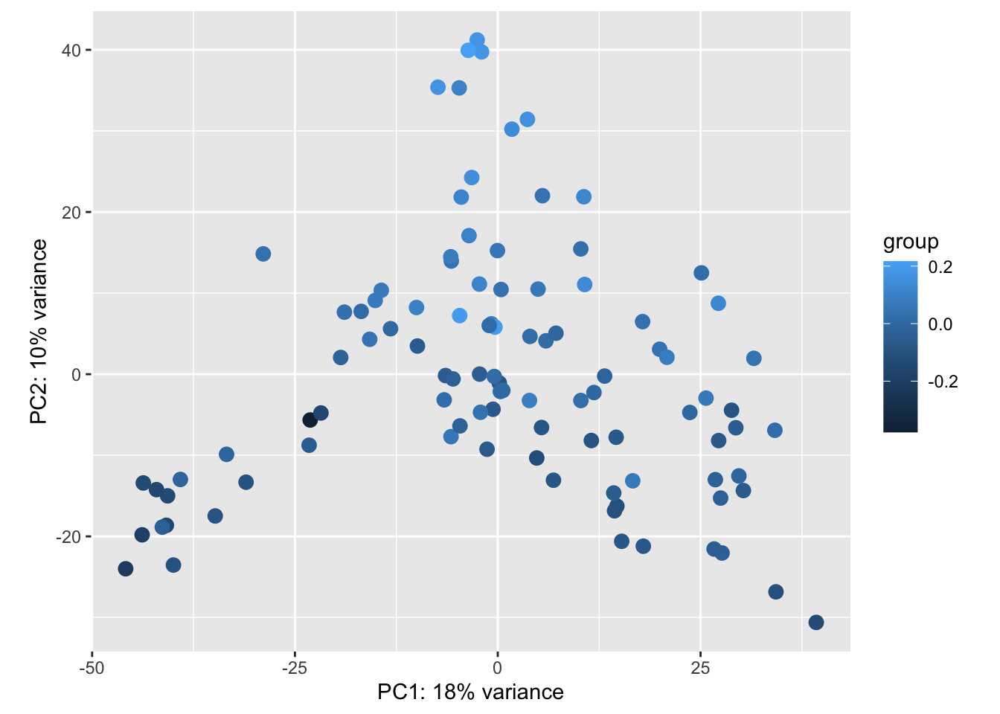

EDA, QC, and DESeq2 / edgeR analysis of 109 RNA-seq samples of immunotherapy treatment
Michael Love
x <- read.csv("GSE91061_BMS038109Sample.hg19KnownGene.raw.csv.gz", row.names=1)
condition <- factor(sub(".+_(.+)_.+", "\\1", colnames(x)))
table(condition)## condition
## On Pre
## 58 51library(DESeq2)
dds <- DESeqDataSetFromMatrix(x,
colData=data.frame(condition),
~condition)
vsd <- vst(dds, blind=FALSE)
plotPCA(vsd)rv <- rowVars(assay(vsd))
pc <- prcomp(t(assay(vsd)[head(order(-rv),1000),]))
plot(pc$x[,1:2], col=condition)
idx <- pc$x[,1] < -25
sum(idx)## [1] 9plot(pc$x[,1:2], col=idx+1, pch=20, asp=1)condition <- condition[!idx]
dds <- dds[,!idx]For comparison, use minimal filtering with edgeR.
library(edgeR)
y <- DGEList(counts=counts(dds), group=condition)
keep <- filterByExpr(y)
table(keep)## keep
## FALSE TRUE
## 5956 16231y <- y[keep,]
dds <- dds[keep,]We can see there is still structure in the 2D PCA, which is not related to the known covariate condition.
vsd <- vst(dds, blind=FALSE)
plotPCA(vsd)
Run simple DESeq2 analysis comparing the two groups, without attempting to control for the technical variation:
system.time({
dds <- DESeq(dds, test="LRT", reduced=~1, fitType="glmGamPoi")
})## estimating size factors## estimating dispersions## gene-wise dispersion estimates## using 'glmGamPoi' as fitType. If used in published research, please cite:
## Ahlmann-Eltze, C., Huber, W. (2020) glmGamPoi: Fitting Gamma-Poisson
## Generalized Linear Models on Single Cell Count Data. Bioinformatics.
## https://doi.org/10.1093/bioinformatics/btaa1009## mean-dispersion relationship## final dispersion estimates## fitting model and testing## Fit reduced model## Calculate quasi likelihood ratio## Prepare results## user system elapsed
## 11.694 1.730 14.602res <- results(dds)
table(res$padj < .1)##
## FALSE TRUE
## 15392 839Ignoring the technical variation is not appropriate, if there is correlation between the technical variation and the condition, not including variables in the design formula that control for the effect on the expression estimates will lead to invalid inference, regardless of the method we choose.
We can estimate the technical variation with a number of methods, including RUV, SVA, or PEER. Here we demonstrate usage of RUV:
library(RUVSeq)
set <- newSeqExpressionSet(counts(dds))
set <- betweenLaneNormalization(set, which="upper")
not_sig <- rownames(res)[which(res$pvalue > .1)]
empirical <- rownames(set)[ rownames(set) %in% not_sig ]
set <- RUVg(set, empirical, k=5)The factors of unwanted variation are labelled W_1, W_2, etc. and are stored as metadata. We add the original condition variable:
pdat <- pData(set)
pdat$condition <- conditionWe can visualize how the factors of unwanted variation describe the samples in the PC1 and PC2 space:
vsd$W1 <- pdat$W_1
vsd$W2 <- pdat$W_2
plotPCA(vsd, intgroup="W1")plotPCA(vsd, intgroup="W2")
Adding the factors to the design, and performing a LRT. Here we use glmGamPoi which is an efficient method for estimating dispersion when we have many samples.
colData(dds) <- cbind(colData(dds), pdat[,1:5])
design(dds) <- ~W_1 + W_2 + W_3 + W_4 + W_5 + conditionsystem.time({
dds <- DESeq(dds, test="LRT", reduced=~W_1 + W_2 + W_3 + W_4 + W_5,
fitType="glmGamPoi")
})## using pre-existing size factors## estimating dispersions## found already estimated dispersions, replacing these## gene-wise dispersion estimates## using 'glmGamPoi' as fitType. If used in published research, please cite:
## Ahlmann-Eltze, C., Huber, W. (2020) glmGamPoi: Fitting Gamma-Poisson
## Generalized Linear Models on Single Cell Count Data. Bioinformatics.
## https://doi.org/10.1093/bioinformatics/btaa1009## mean-dispersion relationship## final dispersion estimates## fitting model and testing## Fit reduced model## Calculate quasi likelihood ratio## Prepare results## user system elapsed
## 23.558 2.016 27.222Controlling for technical variation in this case reduces the number of DE genes. It could also be the opposite, that controlling for technical variation increased the apparent number of DE genes. That the number is reduced here indicates that some of the previous results were likely due to confounding of technical variation with the condition variable. Ignoring that confounding, again, will result in invalid inference for all methods.
res <- results(dds)
table(res$padj < .1)##
## FALSE TRUE
## 16212 19res_sig <- res[which(res$padj < .1),]plotMA(res, ylim=c(-5,5))y <- calcNormFactors(y)
design <- model.matrix(~W_1 + W_2 + W_3 + W_4 + W_5 + condition, data=pdat)
y <- estimateDisp(y, design)
qlfit <- glmQLFit(y, design)
qlft <- glmQLFTest(qlfit)tt <- topTags(qlft, n=nrow(y))[[1]]
sum(tt$FDR < .1)## [1] 0hist(tt$F, freq=FALSE)
F <- tt[rownames(res_sig),"F"]
lines(density(F[!is.na(F)]))match(rownames(res_sig), rownames(tt))## [1] 8 12 7 3 2 15 14 13 4 1 11 18 6 19 5 16 9 21 17table(rownames(res_sig) %in% head(rownames(tt), 20))##
## FALSE TRUE
## 1 18sessionInfo()## R version 4.1.2 (2021-11-01)
## Platform: x86_64-apple-darwin17.0 (64-bit)
## Running under: macOS Big Sur 10.16
##
## Matrix products: default
## LAPACK: /Library/Frameworks/R.framework/Versions/4.1/Resources/lib/libRlapack.dylib
##
## locale:
## [1] en_US.UTF-8/en_US.UTF-8/en_US.UTF-8/C/en_US.UTF-8/en_US.UTF-8
##
## attached base packages:
## [1] stats4 stats graphics grDevices utils datasets methods base
##
## other attached packages:
## [1] RUVSeq_1.28.0 EDASeq_2.28.0 ShortRead_1.52.0
## [4] GenomicAlignments_1.30.0 Rsamtools_2.10.0 Biostrings_2.62.0
## [7] XVector_0.34.0 BiocParallel_1.28.3 edgeR_3.36.0
## [10] limma_3.50.1 DESeq2_1.34.0 SummarizedExperiment_1.24.0
## [13] Biobase_2.54.0 MatrixGenerics_1.6.0 matrixStats_0.61.0
## [16] GenomicRanges_1.46.1 GenomeInfoDb_1.30.1 IRanges_2.28.0
## [19] S4Vectors_0.32.3 BiocGenerics_0.40.0 testthat_3.1.2
## [22] rmarkdown_2.11 devtools_2.4.3 usethis_2.1.5
##
## loaded via a namespace (and not attached):
## [1] colorspace_2.0-3 rjson_0.2.21 hwriter_1.3.2
## [4] ellipsis_0.3.2 rprojroot_2.0.2 fs_1.5.2
## [7] farver_2.1.0 remotes_2.4.2 bit64_4.0.5
## [10] AnnotationDbi_1.56.2 fansi_1.0.2 xml2_1.3.3
## [13] codetools_0.2-18 R.methodsS3_1.8.1 splines_4.1.2
## [16] sparseMatrixStats_1.6.0 cachem_1.0.6 geneplotter_1.72.0
## [19] knitr_1.37 pkgload_1.2.4 jsonlite_1.8.0
## [22] annotate_1.72.0 dbplyr_2.1.1 R.oo_1.24.0
## [25] png_0.1-7 compiler_4.1.2 httr_1.4.2
## [28] assertthat_0.2.1 Matrix_1.4-0 fastmap_1.1.0
## [31] cli_3.2.0 htmltools_0.5.2 prettyunits_1.1.1
## [34] tools_4.1.2 gtable_0.3.0 glue_1.6.2
## [37] GenomeInfoDbData_1.2.7 dplyr_1.0.8 rappdirs_0.3.3
## [40] Rcpp_1.0.8 jquerylib_0.1.4 vctrs_0.3.8
## [43] rtracklayer_1.54.0 DelayedMatrixStats_1.16.0 xfun_0.29
## [46] stringr_1.4.0 ps_1.6.0 brio_1.1.3
## [49] lifecycle_1.0.1 restfulr_0.0.13 XML_3.99-0.9
## [52] MASS_7.3-55 zlibbioc_1.40.0 scales_1.1.1
## [55] aroma.light_3.24.0 hms_1.1.1 parallel_4.1.2
## [58] RColorBrewer_1.1-2 curl_4.3.2 yaml_2.3.5
## [61] memoise_2.0.1 ggplot2_3.3.5.9000 sass_0.4.0
## [64] biomaRt_2.50.3 latticeExtra_0.6-29 stringi_1.7.6
## [67] RSQLite_2.2.10 highr_0.9 genefilter_1.76.0
## [70] BiocIO_1.4.0 desc_1.4.0 GenomicFeatures_1.46.5
## [73] filelock_1.0.2 pkgbuild_1.3.1 rlang_1.0.1
## [76] pkgconfig_2.0.3 bitops_1.0-7 evaluate_0.15
## [79] lattice_0.20-45 glmGamPoi_1.6.0 purrr_0.3.4
## [82] labeling_0.4.2 bit_4.0.4 processx_3.5.2
## [85] tidyselect_1.1.2 magrittr_2.0.2 R6_2.5.1
## [88] generics_0.1.2 DelayedArray_0.20.0 DBI_1.1.2
## [91] pillar_1.7.0 withr_2.4.3 survival_3.2-13
## [94] KEGGREST_1.34.0 RCurl_1.98-1.6 tibble_3.1.6
## [97] crayon_1.5.0 utf8_1.2.2 BiocFileCache_2.2.1
## [100] progress_1.2.2 jpeg_0.1-9 locfit_1.5-9.4
## [103] grid_4.1.2 blob_1.2.2 callr_3.7.0
## [106] digest_0.6.29 xtable_1.8-4 R.utils_2.11.0
## [109] munsell_0.5.0 bslib_0.3.1 sessioninfo_1.2.2